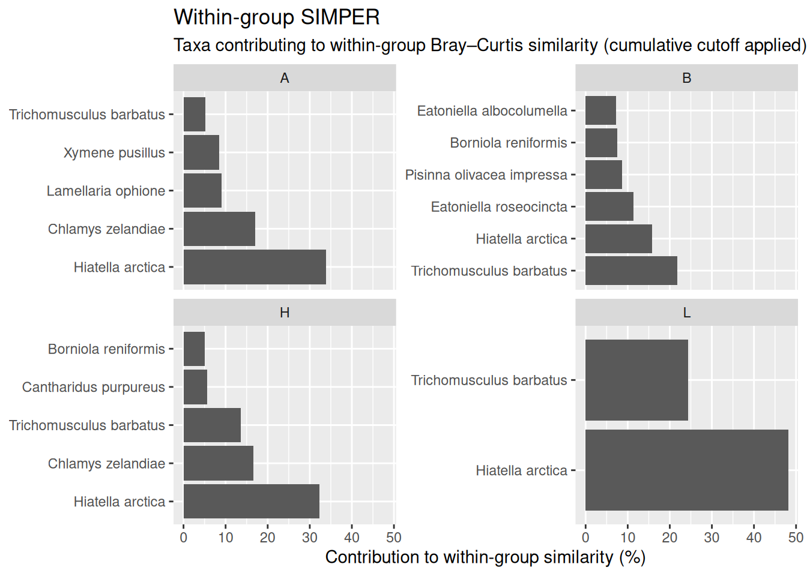

Overview
This vignette shows how to read a PRIMER SIMPER text output file into a structured list of within-group and between-group contribution tables.
It also demonstrates helper functions that convert the nested list output into tidy tibbles that are easier to filter, join, tabulate, and plot.
Read an example file shipped with the package
simper_path <- system.file("extdata", "SIMPER1.txt", package = "primertools")
simper_path[1] "/home/runner/work/_temp/Library/primertools/extdata/SIMPER1.txt"
x <- read_simper(simper_path)
names(x)[1] "metadata" "within" "between"
names(x$within)[1] "B" "A" "H" "L"
names(x$between)[1] "B vs A" "B vs H" "A vs H" "B vs L" "A vs L" "H vs L"Within-group contributions
The within element is a named list of data frames, one per group.
x$within$A species av_abund av_sim sim_sd contrib cum group
1 Hiatella arctica 16.70 12.75 1.34 33.80 33.80 A
2 Chlamys zelandiae 8.80 6.43 1.18 17.04 50.84 A
3 Lamellaria ophione 3.85 3.40 0.82 9.01 59.85 A
4 Xymene pusillus 4.35 3.22 1.36 8.54 68.38 A
5 Trichomusculus barbatus 2.65 1.97 0.97 5.21 73.60 A
avg_similarity
1 37.72
2 37.72
3 37.72
4 37.72
5 37.72Between-group contributions
The between element is a named list of data frames, one per group contrast.
x$between$`A vs H` species av_abund_1 av_abund_2 av_diss diss_sd contrib
1 Hiatella arctica 16.70 13.20 10.18 1.07 14.76
2 Chlamys zelandiae 8.80 7.75 6.11 1.05 8.86
3 Trichomusculus barbatus 2.65 6.25 3.29 1.18 4.77
4 Lamellaria ophione 3.85 0.80 3.27 0.77 4.75
5 Xymene pusillus 4.35 1.50 3.18 1.12 4.62
6 Pisinna olivacea impressa 2.40 4.25 3.06 0.98 4.44
7 Borniola reniformis 3.00 3.70 2.91 1.10 4.22
8 Eatonina micans 0.85 3.20 2.18 0.80 3.16
9 Cantharidus purpureus 0.30 2.85 1.99 1.12 2.88
10 Eatoniella roseocincta 1.45 2.05 1.86 0.75 2.70
11 Crepidula costata 2.25 0.10 1.80 0.94 2.62
12 Curveulima sp 1.95 0.60 1.67 0.66 2.42
13 Onithochiton neglectus 2.00 1.55 1.60 0.96 2.32
14 Fictonoba rufolactea 0.65 1.80 1.46 0.57 2.11
15 Asteracmea suteri 1.90 0.15 1.40 0.82 2.03
16 Modiolarca impacta 1.65 0.50 1.33 0.52 1.94
17 Onoba fumata 1.50 0.25 1.20 0.69 1.75
cum group1 group2 avg_dissimilarity
1 14.76 A H 68.94
2 23.62 A H 68.94
3 28.40 A H 68.94
4 33.14 A H 68.94
5 37.76 A H 68.94
6 42.20 A H 68.94
7 46.42 A H 68.94
8 49.58 A H 68.94
9 52.46 A H 68.94
10 55.16 A H 68.94
11 57.78 A H 68.94
12 60.19 A H 68.94
13 62.52 A H 68.94
14 64.63 A H 68.94
15 66.66 A H 68.94
16 68.59 A H 68.94
17 70.34 A H 68.94Helper: convert within-group results to a single tibble
tidy_simper_within() stacks the within-group tables into one tibble and adds a group column. This makes it easy to filter by cumulative contribution and to work with the results using standard tidyverse workflows.
d_within <- tidy_simper_within(x, cum_max = 90)
d_within# A tibble: 18 × 8
taxon av_abund av_sim sim_sd contrib cum group avg_similarity
<chr> <dbl> <dbl> <dbl> <dbl> <dbl> <chr> <dbl>
1 Trichomusculus bar… 5.05 6.33 1 21.8 21.8 B 29.1
2 Hiatella arctica 3.7 4.59 1.31 15.8 37.5 B 29.1
3 Eatoniella roseoci… 5.35 3.32 0.7 11.4 48.9 B 29.1
4 Pisinna olivacea i… 3.65 2.5 0.74 8.61 57.5 B 29.1
5 Borniola reniformis 5.2 2.2 0.53 7.55 65.1 B 29.1
6 Eatoniella albocol… 2 2.12 0.67 7.29 72.4 B 29.1
7 Hiatella arctica 16.7 12.8 1.34 33.8 33.8 A 37.7
8 Chlamys zelandiae 8.8 6.43 1.18 17.0 50.8 A 37.7
9 Lamellaria ophione 3.85 3.4 0.82 9.01 59.8 A 37.7
10 Xymene pusillus 4.35 3.22 1.36 8.54 68.4 A 37.7
11 Trichomusculus bar… 2.65 1.97 0.97 5.21 73.6 A 37.7
12 Hiatella arctica 13.2 11.0 1.52 32.4 32.4 H 34.2
13 Chlamys zelandiae 7.75 5.67 1.55 16.6 49.0 H 34.2
14 Trichomusculus bar… 6.25 4.65 1.59 13.6 62.6 H 34.2
15 Cantharidus purpur… 2.85 1.94 0.89 5.68 68.2 H 34.2
16 Borniola reniformis 3.7 1.73 0.81 5.08 73.3 H 34.2
17 Hiatella arctica 12.3 17.3 1.44 48.1 48.1 L 35.9
18 Trichomusculus bar… 5.1 8.76 1.25 24.4 72.5 L 35.9Example: show the top 10 taxa per group by contribution.
d_within |>
dplyr::group_by(group) |>
dplyr::slice_max(contrib, n = 10, with_ties = FALSE) |>
dplyr::ungroup()# A tibble: 18 × 8
taxon av_abund av_sim sim_sd contrib cum group avg_similarity
<chr> <dbl> <dbl> <dbl> <dbl> <dbl> <chr> <dbl>
1 Hiatella arctica 16.7 12.8 1.34 33.8 33.8 A 37.7
2 Chlamys zelandiae 8.8 6.43 1.18 17.0 50.8 A 37.7
3 Lamellaria ophione 3.85 3.4 0.82 9.01 59.8 A 37.7
4 Xymene pusillus 4.35 3.22 1.36 8.54 68.4 A 37.7
5 Trichomusculus bar… 2.65 1.97 0.97 5.21 73.6 A 37.7
6 Trichomusculus bar… 5.05 6.33 1 21.8 21.8 B 29.1
7 Hiatella arctica 3.7 4.59 1.31 15.8 37.5 B 29.1
8 Eatoniella roseoci… 5.35 3.32 0.7 11.4 48.9 B 29.1
9 Pisinna olivacea i… 3.65 2.5 0.74 8.61 57.5 B 29.1
10 Borniola reniformis 5.2 2.2 0.53 7.55 65.1 B 29.1
11 Eatoniella albocol… 2 2.12 0.67 7.29 72.4 B 29.1
12 Hiatella arctica 13.2 11.0 1.52 32.4 32.4 H 34.2
13 Chlamys zelandiae 7.75 5.67 1.55 16.6 49.0 H 34.2
14 Trichomusculus bar… 6.25 4.65 1.59 13.6 62.6 H 34.2
15 Cantharidus purpur… 2.85 1.94 0.89 5.68 68.2 H 34.2
16 Borniola reniformis 3.7 1.73 0.81 5.08 73.3 H 34.2
17 Hiatella arctica 12.3 17.3 1.44 48.1 48.1 L 35.9
18 Trichomusculus bar… 5.1 8.76 1.25 24.4 72.5 L 35.9Helper: convert between-group results to a single tibble
tidy_simper_between() stacks the between-group tables into one tibble and adds a contrast column. It also computes delta_abund = av_abund_1 - av_abund_2 to indicate which group has the higher average abundance for each taxon.
d_between <- tidy_simper_between(x, cum_max = 70)
d_between# A tibble: 89 × 12
taxon av_abund_1 av_abund_2 av_diss diss_sd contrib cum group1 group2
<chr> <dbl> <dbl> <dbl> <dbl> <dbl> <dbl> <chr> <chr>
1 Hiatella a… 3.7 16.7 12.6 1.14 16.1 16.1 B A
2 Chlamys ze… 0.85 8.8 7.46 1.03 9.57 25.7 B A
3 Borniola r… 5.2 3 4.62 0.95 5.92 31.6 B A
4 Eatoniella… 5.35 1.45 4.47 0.88 5.73 37.3 B A
5 Trichomusc… 5.05 2.65 4.11 0.9 5.28 42.6 B A
6 Lamellaria… 0.45 3.85 4.1 0.85 5.26 47.9 B A
7 Xymene pus… 0.6 4.35 3.48 1.13 4.46 52.3 B A
8 Pisinna ol… 3.65 2.4 3.36 1.02 4.32 56.6 B A
9 Crepidula … 2.15 2.25 2.54 1.13 3.26 59.9 B A
10 Eatoniella… 2 0.15 2.02 0.87 2.6 62.5 B A
# ℹ 79 more rows
# ℹ 3 more variables: avg_dissimilarity <dbl>, contrast <chr>,
# delta_abund <dbl>Example: extract the top contributors for one contrast.
d_between |>
dplyr::filter(contrast == "A vs H") |>
dplyr::arrange(desc(contrib)) |>
dplyr::slice_head(n = 15)# A tibble: 15 × 12
taxon av_abund_1 av_abund_2 av_diss diss_sd contrib cum group1 group2
<chr> <dbl> <dbl> <dbl> <dbl> <dbl> <dbl> <chr> <chr>
1 Hiatella a… 16.7 13.2 10.2 1.07 14.8 14.8 A H
2 Chlamys ze… 8.8 7.75 6.11 1.05 8.86 23.6 A H
3 Trichomusc… 2.65 6.25 3.29 1.18 4.77 28.4 A H
4 Lamellaria… 3.85 0.8 3.27 0.77 4.75 33.1 A H
5 Xymene pus… 4.35 1.5 3.18 1.12 4.62 37.8 A H
6 Pisinna ol… 2.4 4.25 3.06 0.98 4.44 42.2 A H
7 Borniola r… 3 3.7 2.91 1.1 4.22 46.4 A H
8 Eatonina m… 0.85 3.2 2.18 0.8 3.16 49.6 A H
9 Cantharidu… 0.3 2.85 1.99 1.12 2.88 52.5 A H
10 Eatoniella… 1.45 2.05 1.86 0.75 2.7 55.2 A H
11 Crepidula … 2.25 0.1 1.8 0.94 2.62 57.8 A H
12 Curveulima… 1.95 0.6 1.67 0.66 2.42 60.2 A H
13 Onithochit… 2 1.55 1.6 0.96 2.32 62.5 A H
14 Fictonoba … 0.65 1.8 1.46 0.57 2.11 64.6 A H
15 Asteracmea… 1.9 0.15 1.4 0.82 2.03 66.7 A H
# ℹ 3 more variables: avg_dissimilarity <dbl>, contrast <chr>,
# delta_abund <dbl>Helper: make within-facet ordering for plots
When plotting SIMPER contributions in faceted panels (e.g., one panel per group), ggplot2 orders factor levels globally. add_taxon_group_order() adds a plotting-only factor (taxon_group) that is ordered within each group.
d_within_plot <- d_within |>
add_taxon_group_order()
d_within_plot |>
dplyr::select(taxon, group, contrib, taxon_group) |>
dplyr::slice_head(n = 10)# A tibble: 10 × 4
taxon group contrib taxon_group
<chr> <chr> <dbl> <fct>
1 Trichomusculus barbatus B 21.8 Trichomusculus barbatus___B
2 Hiatella arctica B 15.8 Hiatella arctica___B
3 Eatoniella roseocincta B 11.4 Eatoniella roseocincta___B
4 Pisinna olivacea impressa B 8.61 Pisinna olivacea impressa___B
5 Borniola reniformis B 7.55 Borniola reniformis___B
6 Eatoniella albocolumella B 7.29 Eatoniella albocolumella___B
7 Hiatella arctica A 33.8 Hiatella arctica___A
8 Chlamys zelandiae A 17.0 Chlamys zelandiae___A
9 Lamellaria ophione A 9.01 Lamellaria ophione___A
10 Xymene pusillus A 8.54 Xymene pusillus___A Example plot: within-group contributions
library(ggplot2)
ggplot(d_within_plot, aes(x = contrib, y = taxon_group)) +
geom_col() +
facet_wrap(~ group, scales = "free_y") +
tidytext::scale_y_reordered() +
labs(
title = "Within-group SIMPER",
subtitle = "Taxa contributing to within-group Bray–Curtis similarity (cumulative cutoff applied)",
x = "Contribution to within-group similarity (%)",
y = NULL
)
Notes on interpretation
SIMPER is a descriptive decomposition of average similarity/dissimilarity into taxon contributions. Contributions are not independent and SIMPER does not provide measures of statistical uncertainty.